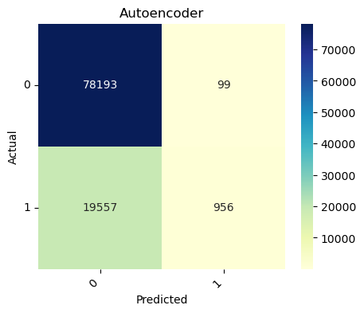
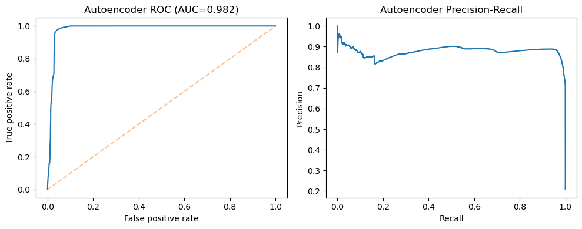
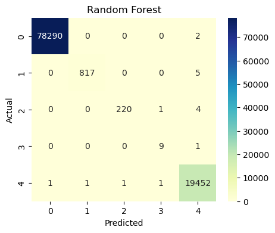

import warnings
warnings.filterwarnings(
"ignore",
message=".*covariance matrix associated to your dataset is not full rank.*"
)Week 04 — Classical ML Models
- Unsupervised / semi-supervised
- Isolation Forest (tune
n_estimators,max_samples,contamination) - One-Class SVM (RBF kernel; tune
nu,gamma; scaled inputs) - Deep Autoencoder (MSE reconstruction loss, early stopping, threshold on reconstruction error)
- Isolation Forest (tune
- Supervised
- Random Forest (class-weight balanced; tune
n_estimators,max_depth) - SVM (RBF kernel, class-weight balanced; tune
C,gamma)
- Random Forest (class-weight balanced; tune
- Imbalance handling
- Compare class_weight vs SMOTE (train only) for rare classes (R2L / U2R analogues)
- Keep a clean baseline that uses only class_weight.
Helper codes in src/models.py and src/eval.py.
import os, sys
sys.path.append(os.path.abspath("..")) # from notebooks/ to project root
from src.utils import set_global_seed, Paths
from src.models import make_fast_oneclass_svm
set_global_seed()
print("Import OK.", Paths)Import OK. <class 'src.utils.Paths'>import os, sys
from pathlib import Path
this_dir = Path.cwd()
project_root = this_dir.parent if this_dir.name == "notebooks" else this_dir
sys.path.append(str(project_root))
from src.utils import Paths, set_global_seed
from src.models import (
make_isolation_forest_grid,
make_oneclass_svm_grid,
make_rf_classifier_grid,
make_svm_rbf_grid,
build_deep_autoencoder,
)
from src.eval import (
plot_confusion,
classification_summary,
binary_roc_pr_curves,
)
import numpy as np
import pandas as pd
import matplotlib.pyplot as plt
import seaborn as sns
from collections import Counter
from sklearn.model_selection import GridSearchCV, train_test_split
from sklearn.metrics import f1_score
set_global_seed(42)
paths = Paths().ensure()
print("Project root:", project_root)
print("Using paths:", paths)Project root: C:\Users\mehra\Final_Project
Using paths: Paths(root=WindowsPath('C:/Users/mehra/Final_Project'), data_raw=WindowsPath('C:/Users/mehra/Final_Project/data/raw'), data_proc=WindowsPath('C:/Users/mehra/Final_Project/data/processed'), figs=WindowsPath('C:/Users/mehra/Final_Project/notebooks/figures'), artifacts=WindowsPath('C:/Users/mehra/Final_Project/notebooks/artifacts'))# Load processed train/test arrays from Week 01.
from pathlib import Path
X_train_path = paths.data_proc / "X_train.npy"
X_test_path = paths.data_proc / "X_test.npy"
y_train_path = paths.data_proc / "y_train.npy"
y_test_path = paths.data_proc / "y_test.npy"
X_train = np.load(X_train_path)
X_test = np.load(X_test_path)
y_train = np.load(y_train_path)
y_test = np.load(y_test_path)
print("X_train:", X_train.shape, "X_test:", X_test.shape)
print("y_train classes:", Counter(y_train))
print("y_test classes:", Counter(y_test))X_train: (395216, 115) X_test: (98805, 115)
y_train classes: Counter({0: 313166, 4: 77822, 1: 3285, 2: 901, 3: 42})
y_test classes: Counter({0: 78292, 4: 19456, 1: 822, 2: 225, 3: 10})To evaluate unsupervised detectors, we convert the multi-class labels into a binary label:
- The majority class in
y_trainis treated as normal (label = 0) - All other classes are treated as attack/anomaly (label = 1)
This matches the standard NSL-KDD setup where attacks are rare compared to normal traffic, but it does not assume any particular encoding of labels.
# Build binary labels for anomaly detection (0 = normal, 1 = attack).
from collections import Counter
import numpy as np
class_counts = Counter(y_train)
normal_label = max(class_counts, key=class_counts.get)
print("Treating label", normal_label, "as NORMAL (0). All others = ATTACK (1).")
def to_binary(y, normal):
return np.where(y == normal, 0, 1)
y_train_bin = to_binary(y_train, normal_label)
y_test_bin = to_binary(y_test, normal_label)
print("Binary train counts:", Counter(y_train_bin))
print("Binary test counts:", Counter(y_test_bin))Treating label 0 as NORMAL (0). All others = ATTACK (1).
Binary train counts: Counter({0: 313166, 1: 82050})
Binary test counts: Counter({0: 78292, 1: 20513})1. Unsupervised / Semi-supervised models
1.1 Isolation Forest
from sklearn.metrics import f1_score
def iso_f1_scorer(estimator, X, y_true):
"""
Convert IsolationForest predictions {1, -1} into {0, 1} and compute F1.
"""
y_raw = estimator.predict(X)
y_pred = (y_raw == -1).astype(int) # -1 = anomaly → 1
return f1_score(y_true, y_pred, zero_division=0)from sklearn.model_selection import GridSearchCV
from src.models import make_isolation_forest_grid
iso_spec = make_isolation_forest_grid()
iso_gs = GridSearchCV(
estimator=iso_spec.model,
param_grid=iso_spec.param_grid,
scoring=iso_f1_scorer,
n_jobs=-1,
cv=3,
verbose=1,
)
iso_gs.fit(X_train, y_train_bin)
print("Best params (Isolation Forest):", iso_gs.best_params_)
print("Best F1 (train CV):", iso_gs.best_score_)Fitting 3 folds for each of 18 candidates, totalling 54 fits
Best params (Isolation Forest): {'contamination': 0.1, 'max_samples': 0.5, 'n_estimators': 200}
Best F1 (train CV): 0.5217237922691421# Evaluate Isolation Forest on the held-out test set.
best_iso = iso_gs.best_estimator_
pred_iso = best_iso.predict(X_test) # 1 = inlier, -1 = outlier
y_pred_iso = np.where(pred_iso == -1, 1, 0)
print("Isolation Forest F1 (test, binary):", f1_score(y_test_bin, y_pred_iso))
plot_confusion(y_test_bin, y_pred_iso, labels=[0, 1], title="Isolation Forest (binary)")Isolation Forest F1 (test, binary): 0.4988470913762435
1.2 One-Class SVM (RBF)
# OC-SVM (RBF)
ocsvm = make_fast_oneclass_svm()
# Train on normal-only data
mask_normal = (y_train_bin == 0)
X_train_normal = X_train[mask_normal]
ocsvm.fit(X_train_normal)
pred = ocsvm.predict(X_test)
y_pred_ocsvm = (pred == -1).astype(int)
plot_confusion(y_test_bin, y_pred_ocsvm, labels=[0, 1], title="OC-SVM")
1.3 Deep Autoencoder
### 1.3 Deep Autoencoder — Chapter_2 architecture on Week04 features
from tensorflow import keras
from tensorflow.keras import layers
import numpy as np
from sklearn.metrics import f1_score
# Use the same X_train / X_test that you loaded at the top of Week04
input_dim = X_train.shape[1]
print("Autoencoder input_dim:", input_dim)
# Architecture matching the screenshot: input_dim → 30 → 16 → 8 → 16 → 30 → input_dim
input_layer = keras.Input(shape=(input_dim,))
encoded = layers.Dense(30, activation="relu")(input_layer)
encoded = layers.Dense(16, activation="relu")(encoded)
encoded = layers.Dense(8, activation="relu")(encoded)
decoded = layers.Dense(16, activation="relu")(encoded)
decoded = layers.Dense(30, activation="relu")(decoded)
decoded = layers.Dense(input_dim, activation="linear")(decoded)
autoencoder = keras.Model(input_layer, decoded, name="deep_autoencoder_ch2")
autoencoder.compile(
optimizer="adam",
loss="mean_squared_error"
)
autoencoder.summary()Autoencoder input_dim: 115Model: "deep_autoencoder_ch2"
┏━━━━━━━━━━━━━━━━━━━━━━━━━━━━━━━━━┳━━━━━━━━━━━━━━━━━━━━━━━━┳━━━━━━━━━━━━━━━┓ ┃ Layer (type) ┃ Output Shape ┃ Param # ┃ ┡━━━━━━━━━━━━━━━━━━━━━━━━━━━━━━━━━╇━━━━━━━━━━━━━━━━━━━━━━━━╇━━━━━━━━━━━━━━━┩ │ input_layer (InputLayer) │ (None, 115) │ 0 │ ├─────────────────────────────────┼────────────────────────┼───────────────┤ │ dense (Dense) │ (None, 30) │ 3,480 │ ├─────────────────────────────────┼────────────────────────┼───────────────┤ │ dense_1 (Dense) │ (None, 16) │ 496 │ ├─────────────────────────────────┼────────────────────────┼───────────────┤ │ dense_2 (Dense) │ (None, 8) │ 136 │ ├─────────────────────────────────┼────────────────────────┼───────────────┤ │ dense_3 (Dense) │ (None, 16) │ 144 │ ├─────────────────────────────────┼────────────────────────┼───────────────┤ │ dense_4 (Dense) │ (None, 30) │ 510 │ ├─────────────────────────────────┼────────────────────────┼───────────────┤ │ dense_5 (Dense) │ (None, 115) │ 3,565 │ └─────────────────────────────────┴────────────────────────┴───────────────┘
Total params: 8,331 (32.54 KB)
Trainable params: 8,331 (32.54 KB)
Non-trainable params: 0 (0.00 B)
# Ensure numeric float dtype
X_train_ae = X_train.astype("float32")
X_test_ae = X_test.astype("float32")
history = autoencoder.fit(
X_train_ae,
X_train_ae, # reconstruction target
epochs=10, # like in Chapter_2 screenshot
batch_size=256,
shuffle=True,
validation_split=0.1,
verbose=1,
)Epoch 1/10 1390/1390 ━━━━━━━━━━━━━━━━━━━━ 5s 2ms/step - loss: 0.1647 - val_loss: 0.0458 Epoch 2/10 1390/1390 ━━━━━━━━━━━━━━━━━━━━ 3s 2ms/step - loss: 0.1108 - val_loss: 0.0363 Epoch 3/10 1390/1390 ━━━━━━━━━━━━━━━━━━━━ 4s 3ms/step - loss: 0.0769 - val_loss: 0.0338 Epoch 4/10 1390/1390 ━━━━━━━━━━━━━━━━━━━━ 3s 2ms/step - loss: 0.0594 - val_loss: 0.0386 Epoch 5/10 1390/1390 ━━━━━━━━━━━━━━━━━━━━ 3s 2ms/step - loss: 0.0547 - val_loss: 0.0264 Epoch 6/10 1390/1390 ━━━━━━━━━━━━━━━━━━━━ 3s 2ms/step - loss: 0.0655 - val_loss: 0.0216 Epoch 7/10 1390/1390 ━━━━━━━━━━━━━━━━━━━━ 4s 3ms/step - loss: 0.0583 - val_loss: 0.0175 Epoch 8/10 1390/1390 ━━━━━━━━━━━━━━━━━━━━ 3s 2ms/step - loss: 0.0544 - val_loss: 0.0146 Epoch 9/10 1390/1390 ━━━━━━━━━━━━━━━━━━━━ 3s 2ms/step - loss: 0.0278 - val_loss: 0.0145 Epoch 10/10 1390/1390 ━━━━━━━━━━━━━━━━━━━━ 3s 2ms/step - loss: 0.0386 - val_loss: 0.0149
# Reconstruction error on training + test
recon_train = autoencoder.predict(X_train, verbose=0)
recon_test = autoencoder.predict(X_test, verbose=0)
train_err = np.mean((X_train - recon_train) ** 2, axis=1)
test_err = np.mean((X_test - recon_test) ** 2, axis=1)
# Choose threshold as a high percentile of *training* error
threshold = np.percentile(train_err, 99)
print("Autoencoder threshold (99th percentile of train error):", threshold)
y_pred_ae = (test_err >= threshold).astype(int)
print("Autoencoder F1 (test, binary):", f1_score(y_test_bin, y_pred_ae))
plot_confusion(y_test_bin, y_pred_ae, labels=[0, 1], title="Autoencoder")Autoencoder threshold (99th percentile of train error): 0.1440299195070224
Autoencoder F1 (test, binary): 0.08864985163204747
# ROC / PR curves for the autoencoder scores
binary_roc_pr_curves(y_test_bin, test_err, pos_label=1, title_prefix="Autoencoder ")(<Figure size 1000x400 with 2 Axes>,
array([<Axes: title={'center': 'Autoencoder ROC (AUC=0.982)'}, xlabel='False positive rate', ylabel='True positive rate'>,
<Axes: title={'center': 'Autoencoder Precision-Recall'}, xlabel='Recall', ylabel='Precision'>],
dtype=object))
2. Supervised models: Random Forest and SVM (RBF)
2.1 Random Forest
Use the full multi-class labels (y_train, y_test) and train:
- Random Forest (class_weight=“balanced”; tune
n_estimators,max_depth) - SVM with RBF kernel (class_weight=“balanced”; tune
C,gamma)
This gives a supervised baseline to compare against the unsupervised / semi-supervised detectors.
rf_spec = make_rf_classifier_grid()
rf_gs = GridSearchCV(
estimator=rf_spec.model,
param_grid=rf_spec.param_grid,
scoring="f1_weighted",
n_jobs=-1,
cv=3,
verbose=1,
)
rf_gs.fit(X_train, y_train)
print("Random Forest best params:", rf_gs.best_params_)
print("Random Forest best CV f1_weighted:", rf_gs.best_score_)Fitting 3 folds for each of 9 candidates, totalling 27 fits
Random Forest best params: {'max_depth': 20, 'n_estimators': 400}
Random Forest best CV f1_weighted: 0.9997615589652838best_rf = rf_gs.best_estimator_
y_pred_rf = best_rf.predict(X_test)
rf_report = classification_summary(y_test, y_pred_rf, print_report=True)
plot_confusion(y_test, y_pred_rf, title="Random Forest") precision recall f1-score support
0 1.00 1.00 1.00 78292
1 1.00 0.99 1.00 822
2 1.00 0.98 0.99 225
3 0.82 0.90 0.86 10
4 1.00 1.00 1.00 19456
accuracy 1.00 98805
macro avg 0.96 0.97 0.97 98805
weighted avg 1.00 1.00 1.00 98805

2.2 SVM-RBF
from sklearn.pipeline import Pipeline
from sklearn.preprocessing import StandardScaler
from sklearn.svm import SVC
# SVM-RBF
svm_fast = Pipeline([
("scaler", StandardScaler()),
("svc", SVC(
kernel="rbf",
class_weight="balanced",
C=10, # reasonable value
gamma="scale" # reasonable value
))
])
svm_fast.fit(X_train, y_train)
y_pred_svm = svm_fast.predict(X_test)
classification_summary(y_test, y_pred_svm, print_report=True)
plot_confusion(y_test, y_pred_svm, title="SVM-RBF") precision recall f1-score support
0 1.00 1.00 1.00 78292
1 0.97 0.98 0.97 822
2 0.72 0.98 0.83 225
3 0.73 0.80 0.76 10
4 1.00 0.99 1.00 19456
accuracy 1.00 98805
macro avg 0.88 0.95 0.91 98805
weighted avg 1.00 1.00 1.00 98805

3. Imbalance handling: class_weight vs SMOTE for rare classes (R2L / U2R analogues)
NSL-KDD includes very rare R2L and U2R attack families. Instead of assuming we already know which integer labels correspond to these families, we follow a data-driven approach:
- Identify the two rarest classes in
y_train. - Treat them as “R2L/U2R-like” minority classes.
- Compare:
- Baseline models using only
class_weight="balanced" - Models trained on SMOTE-resampled data (train only), focusing on those rare classes.
- Baseline models using only
from imblearn.over_sampling import SMOTE
from collections import Counter
# Identify the two rarest classes
class_counts_full = Counter(y_train)
classes_sorted = sorted(class_counts_full.items(), key=lambda kv: kv[1])
minority_classes = [c for c, _ in classes_sorted[:2]]
print("Minority classes (treated as R2L/U2R-like):", minority_classes)
print("Class counts:", class_counts_full)Minority classes (treated as R2L/U2R-like): [3, 2]
Class counts: Counter({0: 313166, 4: 77822, 1: 3285, 2: 901, 3: 42})def evaluate_subset(classes_subset, y_true, y_pred):
import numpy as np
mask = np.isin(y_true, classes_subset)
y_true_sub = y_true[mask]
y_pred_sub = y_pred[mask]
print("Subset size:", y_true_sub.shape[0])
return classification_summary(y_true_sub, y_pred_sub, print_report=True)3.1 Baseline: class_weight only
print("Random Forest (class_weight baseline) — minority classes")
_ = evaluate_subset(minority_classes, y_test, y_pred_rf)
print("\nSVM-RBF (class_weight baseline) — minority classes")
_ = evaluate_subset(minority_classes, y_test, y_pred_svm)Random Forest (class_weight baseline) — minority classes
Subset size: 235
precision recall f1-score support
2 1.00 0.98 0.99 225
3 0.90 0.90 0.90 10
4 0.00 0.00 0.00 0
accuracy 0.97 235
macro avg 0.63 0.63 0.63 235
weighted avg 1.00 0.97 0.98 235
SVM-RBF (class_weight baseline) — minority classes
Subset size: 235
precision recall f1-score support
2 1.00 0.98 0.99 225
3 1.00 0.80 0.89 10
4 0.00 0.00 0.00 0
accuracy 0.97 235
macro avg 0.67 0.59 0.63 235
weighted avg 1.00 0.97 0.98 235
3.2 SMOTE + Random Forest / SVM-RBF (train only)
# SMOTE strategy: upsample only the identified minority classes
desired = max(class_counts_full.values())
sampling_strategy = {cls: desired for cls in minority_classes}
print("SMOTE sampling strategy:", sampling_strategy)
smote = SMOTE(sampling_strategy=sampling_strategy, random_state=42)
X_train_sm, y_train_sm = smote.fit_resample(X_train, y_train)
print("After SMOTE counts:", Counter(y_train_sm))SMOTE sampling strategy: {3: 313166, 2: 313166}
After SMOTE counts: Counter({0: 313166, 2: 313166, 3: 313166, 4: 77822, 1: 3285})from sklearn.ensemble import RandomForestClassifier
# Reuse best params from the *baseline* RF grid search
print("Baseline RF best params:", rf_gs.best_params_)
rf_sm = RandomForestClassifier(
n_estimators=rf_gs.best_params_["n_estimators"],
max_depth=rf_gs.best_params_["max_depth"],
n_jobs=-1,
class_weight="balanced", # you can also set this to None, since SMOTE already balances
random_state=42,
)
# Fit on SMOTE-resampled data (single fit, much faster than GridSearchCV)
rf_sm.fit(X_train_sm, y_train_sm)
y_pred_rf_sm = rf_sm.predict(X_test)
print("\nRandom Forest + SMOTE — full test report")
_ = classification_summary(y_test, y_pred_rf_sm, print_report=True)
print("\nRandom Forest + SMOTE — minority classes")
_ = evaluate_subset(minority_classes, y_test, y_pred_rf_sm)Baseline RF best params: {'max_depth': 20, 'n_estimators': 400}
Random Forest + SMOTE — full test report
precision recall f1-score support
0 1.00 1.00 1.00 78292
1 1.00 0.99 1.00 822
2 0.99 0.98 0.99 225
3 0.75 0.90 0.82 10
4 1.00 1.00 1.00 19456
accuracy 1.00 98805
macro avg 0.95 0.98 0.96 98805
weighted avg 1.00 1.00 1.00 98805
Random Forest + SMOTE — minority classes
Subset size: 235
precision recall f1-score support
2 1.00 0.98 0.99 225
3 0.82 0.90 0.86 10
4 0.00 0.00 0.00 0
accuracy 0.98 235
macro avg 0.60 0.63 0.62 235
weighted avg 0.99 0.98 0.98 235
4. SVM-RBF (Baseline, Fast Subset)
import numpy as np
from collections import Counter
def build_svm_subset(X, y, minority_classes, max_samples=5000, random_state=42):
# Build a smaller train set for SVM:
# - Keep ALL samples from minority_classes
# - Subsample majority classes so total ~ max_samples
rng = np.random.RandomState(random_state)
y = np.asarray(y)
# Indices for minority and majority
mask_min = np.isin(y, minority_classes)
idx_min = np.where(mask_min)[0]
idx_maj = np.where(~mask_min)[0]
# Always keep all minority samples
keep_idx = list(idx_min)
# Remaining budget for majority
remaining = max(0, max_samples - len(idx_min))
if remaining > 0 and len(idx_maj) > remaining:
subsampled_maj = rng.choice(idx_maj, size=remaining, replace=False)
else:
subsampled_maj = idx_maj
keep_idx.extend(subsampled_maj)
keep_idx = np.array(keep_idx)
X_small = X[keep_idx]
y_small = y[keep_idx]
print("SVM subset size:", X_small.shape, "class counts:", Counter(y_small))
return X_small, y_small5. SVM-RBF with SMOTE Oversampling
from src.models import make_fast_svm_rbf
from imblearn.over_sampling import SMOTE
from collections import Counter
# 1) Identify minority classes
class_counts_full = Counter(y_train)
classes_sorted = sorted(class_counts_full.items(), key=lambda kv: kv[1])
minority_classes = [c for c, _ in classes_sorted[:2]]
print("Minority classes:", minority_classes)
print("Class counts:", class_counts_full)
# 2) Build smaller subset for SVM baseline (no SMOTE)
X_train_svm, y_train_svm = build_svm_subset(
X_train, y_train,
minority_classes=minority_classes,
max_samples=2000, # you can drop to 3000 or 2000 if still slow
random_state=42
)
# 3) SMOTE on FULL train, then subset for SVM
desired = max(class_counts_full.values())
sampling_strategy = {cls: desired for cls in minority_classes}
print("SMOTE sampling strategy:", sampling_strategy)
smote = SMOTE(sampling_strategy=sampling_strategy, random_state=42)
X_train_sm_full, y_train_sm_full = smote.fit_resample(X_train, y_train)
print("After SMOTE (full):", Counter(y_train_sm_full))
# Subset the SMOTE-resampled set for SVM
X_train_sm_svm, y_train_sm_svm = build_svm_subset(
X_train_sm_full, y_train_sm_full,
minority_classes=minority_classes,
max_samples=5000,
random_state=42
)
# 4) SVM baseline (no SMOTE)
svm_fast = make_fast_svm_rbf()
svm_fast.fit(X_train_svm, y_train_svm)
y_pred_svm = svm_fast.predict(X_test)
print("\nSVM-RBF baseline (fast, subset)")
classification_summary(y_test, y_pred_svm, print_report=True)
plot_confusion(y_test, y_pred_svm, title="SVM-RBF (fast baseline, subset)")
# 5) SVM on SMOTE-resampled subset
svm_sm = make_fast_svm_rbf()
svm_sm.fit(X_train_sm_svm, y_train_sm_svm)
y_pred_svm_sm = svm_sm.predict(X_test)
print("\nSVM-RBF + SMOTE (fast, subset)")
classification_summary(y_test, y_pred_svm_sm, print_report=True)
print("\nMinority class performance (SVM + SMOTE)")
evaluate_subset(minority_classes, y_test, y_pred_svm_sm)Minority classes: [3, 2]
Class counts: Counter({0: 313166, 4: 77822, 1: 3285, 2: 901, 3: 42})
SVM subset size: (2000, 115) class counts: Counter({2: 901, 0: 853, 4: 201, 3: 42, 1: 3})
SMOTE sampling strategy: {3: 313166, 2: 313166}
After SMOTE (full): Counter({0: 313166, 2: 313166, 3: 313166, 4: 77822, 1: 3285})
SVM subset size: (1020605, 115) class counts: Counter({2: 313166, 3: 313166, 0: 313166, 4: 77822, 1: 3285})
SVM-RBF baseline (fast, subset)
precision recall f1-score support
0 1.00 0.99 1.00 78292
1 1.00 0.07 0.13 822
2 0.13 1.00 0.23 225
3 0.11 0.60 0.19 10
4 0.97 0.96 0.97 19456
accuracy 0.98 98805
macro avg 0.64 0.72 0.50 98805
weighted avg 0.99 0.98 0.98 98805
SVM-RBF + SMOTE (fast, subset)
precision recall f1-score support
0 1.00 1.00 1.00 78292
1 0.98 0.98 0.98 822
2 0.70 0.98 0.82 225
3 0.78 0.70 0.74 10
4 1.00 0.99 1.00 19456
accuracy 1.00 98805
macro avg 0.89 0.93 0.91 98805
weighted avg 1.00 1.00 1.00 98805
Minority class performance (SVM + SMOTE)
Subset size: 235
precision recall f1-score support
0 0.00 0.00 0.00 0
2 1.00 0.98 0.99 225
3 1.00 0.70 0.82 10
4 0.00 0.00 0.00 0
accuracy 0.97 235
macro avg 0.50 0.42 0.45 235
weighted avg 1.00 0.97 0.98 235
{'0': {'precision': 0.0, 'recall': 0.0, 'f1-score': 0.0, 'support': 0.0},
'2': {'precision': 0.995475113122172,
'recall': 0.9777777777777777,
'f1-score': 0.9865470852017937,
'support': 225.0},
'3': {'precision': 1.0,
'recall': 0.7,
'f1-score': 0.8235294117647058,
'support': 10.0},
'4': {'precision': 0.0, 'recall': 0.0, 'f1-score': 0.0, 'support': 0.0},
'accuracy': 0.9659574468085106,
'macro avg': {'precision': 0.498868778280543,
'recall': 0.4194444444444444,
'f1-score': 0.4525191242416249,
'support': 235.0},
'weighted avg': {'precision': 0.9956676614999519,
'recall': 0.9659574468085106,
'f1-score': 0.9796101629278751,
'support': 235.0}}
# Save existing results for later evaluation
import numpy as np
import pandas as pd
from pathlib import Path
from src.utils import Paths
paths = Paths().ensure()
this_dir = Path.cwd()
project_root = this_dir.parent if this_dir.name == "notebooks" else this_dir
# Use paths.reports if it exists; otherwise fallback to <project_root>/reports
reports_root = getattr(paths, "reports", project_root / "reports")
wk4_dir = reports_root / "week_04"
wk4_dir.mkdir(parents=True, exist_ok=True)
print("Saving Week 04 results under:", wk4_dir)
# UNSUPERVISED / SEMI-SUPERVISED
#
# Use variables that ALREADY exist from earlier cells:
# y_test_bin : binary true labels (0 = normal, 1 = attack)
# y_pred_iso : Isolation Forest binary predictions
# y_pred_ocsvm : OC-SVM binary predictions
# y_pred_ae : Autoencoder binary predictions
# test_err : Autoencoder reconstruction error (per test sample)
#
# Scores are taken from existing values:
# - Isolation Forest / OC-SVM: score = y_pred_* (0/1 as a crude anomaly score)
# - Autoencoder: score = test_err reconstruction error)
unsup_frames = []
def add_binary_model_existing(name, y_true, y_pred, score):
df = pd.DataFrame({
"model": name,
"y_true_bin": np.asarray(y_true).astype(int),
"y_pred_bin": np.asarray(y_pred).astype(int),
"score": np.asarray(score).astype(float),
})
unsup_frames.append(df)
print(f"Added unsupervised/semi-supervised model: {name}")
# Isolation Forest
if "y_test_bin" in globals() and "y_pred_iso" in globals():
add_binary_model_existing(
"Isolation Forest",
y_test_bin,
y_pred_iso,
y_pred_iso, # just reuse 0/1 prediction as score (no recomputation)
)
else:
print("Isolation Forest predictions not found; skipping.")
# OC-SVM
if "y_test_bin" in globals() and "y_pred_ocsvm" in globals():
add_binary_model_existing(
"OC-SVM (RBF)",
y_test_bin,
y_pred_ocsvm,
y_pred_ocsvm, # reuse 0/1 prediction as score
)
else:
print("OC-SVM predictions not found; skipping.")
# Autoencoder
if "y_test_bin" in globals() and "y_pred_ae" in globals() and "test_err" in globals():
add_binary_model_existing(
"Deep Autoencoder",
y_test_bin,
y_pred_ae,
test_err, # reconstruction error already computed
)
else:
print("Autoencoder predictions/errors not found; skipping.")
if unsup_frames:
unsup_df = pd.concat(unsup_frames, ignore_index=True)
unsup_csv_path = wk4_dir / "week04_unsupervised_predictions.csv"
unsup_parquet_path = wk4_dir / "week04_unsupervised_predictions.parquet"
unsup_df.to_csv(unsup_csv_path, index=False)
try:
unsup_df.to_parquet(unsup_parquet_path, index=False)
except Exception as e:
print("Parquet save for unsupervised models failed (optional):", e)
print("\nSaved unsupervised/semi-supervised results to:")
print(" -", unsup_csv_path)
print(" -", unsup_parquet_path)
else:
print("No unsupervised/semi-supervised models were added; nothing saved for that group.")
sup_frames = []
def add_supervised_existing(model_name, y_true, y_pred):
df = pd.DataFrame({
"model": model_name,
"y_true": np.asarray(y_true),
"y_pred": np.asarray(y_pred),
})
sup_frames.append(df)
print(f"Added supervised model: {model_name}")
# Random Forest baseline
if "y_test" in globals() and "y_pred_rf" in globals():
add_supervised_existing("Random Forest (baseline)", y_test, y_pred_rf)
else:
print("Random Forest baseline predictions not found; skipping.")
# SVM-RBF baseline
if "y_test" in globals() and "y_pred_svm" in globals():
add_supervised_existing("SVM-RBF (baseline)", y_test, y_pred_svm)
else:
print("SVM-RBF baseline predictions not found; skipping.")
# Random Forest + SMOTE
if "y_test" in globals() and "y_pred_rf_sm" in globals():
add_supervised_existing("Random Forest + SMOTE", y_test, y_pred_rf_sm)
else:
print("Random Forest + SMOTE predictions not found; skipping.")
# SVM-RBF + SMOTE
if "y_test" in globals() and "y_pred_svm_sm" in globals():
add_supervised_existing("SVM-RBF + SMOTE", y_test, y_pred_svm_sm)
else:
print("SVM-RBF + SMOTE predictions not found; skipping.")
if sup_frames:
sup_pred_df = pd.concat(sup_frames, ignore_index=True)
sup_csv_path = wk4_dir / "week04_supervised_predictions.csv"
sup_parquet_path = wk4_dir / "week04_supervised_predictions.parquet"
sup_pred_df.to_csv(sup_csv_path, index=False)
try:
sup_pred_df.to_parquet(sup_parquet_path, index=False)
except Exception as e:
print("Parquet save for supervised models failed (optional):", e)
print("\nSaved supervised results to:")
print(" -", sup_csv_path)
print(" -", sup_parquet_path)
else:
print("No supervised models were added; nothing saved for that group.")Saving Week 04 results under: C:\Users\mehra\Final_Project\reports\week_04
Added unsupervised/semi-supervised model: Isolation Forest
Added unsupervised/semi-supervised model: OC-SVM (RBF)
Added unsupervised/semi-supervised model: Deep Autoencoder
Saved unsupervised/semi-supervised results to:
- C:\Users\mehra\Final_Project\reports\week_04\week04_unsupervised_predictions.csv
- C:\Users\mehra\Final_Project\reports\week_04\week04_unsupervised_predictions.parquet
Added supervised model: Random Forest (baseline)
Added supervised model: SVM-RBF (baseline)
Added supervised model: Random Forest + SMOTE
Added supervised model: SVM-RBF + SMOTE
Saved supervised results to:
- C:\Users\mehra\Final_Project\reports\week_04\week04_supervised_predictions.csv
- C:\Users\mehra\Final_Project\reports\week_04\week04_supervised_predictions.parquet# Save Week 04 models for Week 06 explainability
import joblib
from pathlib import Path
from src.utils import Paths
paths = Paths().ensure()
this_dir = Path.cwd()
project_root = this_dir.parent if this_dir.name == "notebooks" else this_dir
models_dir = getattr(paths, "models", project_root / "models")
models_dir.mkdir(parents=True, exist_ok=True)
rf_path = models_dir / "week04_rf.joblib"
svm_path = models_dir / "week04_svm.joblib"
ae_path = models_dir / "week04_ae.joblib"
print("Saving models to:", models_dir)
# These variables already exist in your notebook:
# best_rf -> best RandomForest from GridSearch
# svm_fast -> SVM-RBF Pipeline (baseline)
# autoencoder -> trained deep autoencoder
joblib.dump(best_rf, rf_path)
print("Saved RF to:", rf_path)
joblib.dump(svm_fast, svm_path)
print("Saved SVM to:", svm_path)
joblib.dump(autoencoder, ae_path)
print("Saved Autoencoder to:", ae_path)Saving models to: C:\Users\mehra\Final_Project\models
Saved RF to: C:\Users\mehra\Final_Project\models\week04_rf.joblib
Saved SVM to: C:\Users\mehra\Final_Project\models\week04_svm.joblib
Saved Autoencoder to: C:\Users\mehra\Final_Project\models\week04_ae.joblib